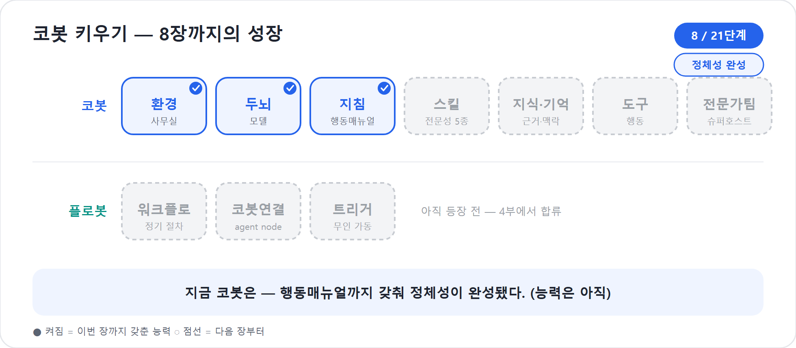

8장. 지침 쓰기 — 행동매뉴얼의 기술
사무실이 정해지고(6장), 코봇이 자연어 설명으로 만들어져 두뇌를 얹었다(7장). 그러나 아직 코봇은 자신이 누구인지 충분히 모른다. 같은 모델을 얹은 두 코봇이 한쪽은 평범한 답변기처럼 말하고, 다른 한쪽은 믿음직한 동료처럼 일하는 까닭은 두뇌만으로 설명되지 않는다. 차이는 지침(Instructions)에 있다.
새 에이전트 경험의 Build 탭에서 Instructions는 코봇의 정체성, 성격, 말투, 범위, 행동 규칙을 정의하는 자리다. Microsoft Learn도 새 경험에서는 토픽과 명시적 흐름보다 지침과 추론이 에이전트 행동을 이끈다고 설명한다. 그래서 이 장은 2부의 심장이다. 코봇을 만드는 일은 결국 “이 동료는 어떤 사람이고, 어떤 기준으로 일하며, 어디서 멈춰야 하는가”를 글로 세우는 일이기 때문이다.
2026년 기준 주의
이 장은 새 에이전트 경험의 Instructions component를 다룬다. 클래식의 토픽, 노드 캔버스, 트리거 문구 설계는 옛 방식으로만 언급한다. 신버전에서 토픽의 자리는 Skill과 Workflows 조합이 나누어 맡으며, 이 장은 그중에서도 모든 행동의 바탕이 되는 지침에 집중한다.
백지에서 쓰지 않는다 — Copilot과 함께 쓴다
지침이 중요하다는 말을 들으면 많은 이가 겁부터 먹는다. “글 한 장으로 코봇의 됨됨이가 정해진다면, 그 글을 어떻게 써야 하나.” 그러나 신버전의 진짜 변화는 여기에 있다. 지침은 백지에서 혼자 쓰는 것이 아니다. Copilot과 대화하며 함께 쓴다.
현실적인 작업 순서는 이렇다. 먼저 설명한다. “사내 워크숍 프로젝트를 운영하는 PM 에이전트를 만들고 싶다”고 평범한 말로 던지면, Copilot이 초안 지침을 써준다. 다음으로 대화로 고친다. “법무 자문은 범위에서 빼줘”, “모를 땐 담당자에게 연결하라고 넣어줘”, “말투를 더 담백하게”, “결과는 표와 5줄 요약으로 정리하게 해줘”처럼 말로 다듬는다. 마지막으로 검증한다. Preview로 돌려 보고(16장), 어긋나면 다시 지침을 고친다. Evaluate(18장)에서는 여러 질문으로 같은 기준을 반복 검증한다.
초안 작성에 Copilot을 쓰는 것은 게으름이 아니다. 현업 전문가가 신입사원 매뉴얼 초안을 선배와 함께 잡는 일에 가깝다. 중요한 것은 초안을 누가 먼저 썼느냐가 아니라, 최종 매뉴얼이 업무 기준을 제대로 담았느냐이다.
예를 들어 처음 설명은 이렇게 짧아도 된다.
사내 프로젝트 운영을 돕는 PM 에이전트의 지침을 작성해줘.
목표·범위·이해관계자·일정·예산·리스크·보고서를 다루되,
법무 자문과 회계 처리는 하지 않게 해줘.
모르는 정보는 추측하지 말고 질문하게 해줘.그러면 Copilot은 그럴듯한 초안을 내놓을 것이다. 하지만 그 초안은 아직 입사 첫날 받은 임시 매뉴얼이다. 당신은 팀장으로서 빠진 범위, 위험한 표현, 모호한 책임, 과도한 약속을 찾아 고쳐야 한다.
코봇 한마디
"저의 행동매뉴얼은 혼자 빈 종이에 쓰는 숙제가 아니에요. Copilot과 초안을 만들고, 사람 팀장님이 업무 기준으로 다듬어 주시면 저는 훨씬 빨리 배웁니다!"
화면에서: 설명 한 장에서 지침 초안까지
말로만 들으면 막연하다. 실제 화면에서 어디를 거치는지 한 번 따라가 보자. 새 에이전트 경험에서 지침은 Create(만들기) → Build(빌드) → Preview(미리보기)의 짧은 고리를 돈다.
- Create에서 설명한다. Copilot Studio에서 새 에이전트 만들기를 고르면, 빈 양식이 아니라 대화창이 먼저 열린다. 여기에 평범한 말로 설명한다. “사내 워크숍 프로젝트를 운영하는 PM 에이전트를 만들고 싶어. 기획·일정·예산·리스크·보고를 돕고, 법무 자문과 회계 확정은 빼줘.” Copilot이 이 설명을 바탕으로 이름, 첫 지침 초안, 시작 메시지 같은 뼈대를 구성한다.
- Build로 들어간다. 만들기를 마치면 코봇의 작업 표면인 Build 탭이 열린다. 상단에는 Build·Preview·Evaluate·Monitor가 보이고(5장), Build 안에는 Instructions, Knowledge, Tools and skills, Model, Connected agents가 한자리에 모여 있다.
- Instructions 필드를 연다. Build의 Instructions 칸에는 방금 Create에서 만든 초안이 이미 들어 있다. 백지가 아니다. 이 칸이 바로 코봇의 행동매뉴얼이 사는 자리다.
- 대화로 다듬는다. 초안을 직접 고쳐도 되고, 옆의 Copilot에게 “법무 자문은 범위에서 빼줘”, “모를 땐 담당자에게 연결하라고 넣어줘”, “결과는 표와 5줄 요약으로”처럼 말로 주문해도 된다. 고친 내용은 Instructions 칸에 반영된다.
- Preview로 바로 확인한다. 같은 화면 오른쪽 Preview에서 즉시 질문을 던져 본다. 어긋나면 Instructions로 돌아가 한 줄을 고치고 다시 묻는다. 이 “고치고-물어보기”가 지침을 키우는 기본 리듬이다.
2026년 기준 주의
화면 명칭과 배치는 공개 미리보기 기준이며 릴리스 과정에서 바뀔 수 있다. 중요한 것은 버튼 위치가 아니라 설명 → 초안 → 다듬기 → 검증의 순서다. 이 순서는 화면이 바뀌어도 유지된다.
여기서 핵심은, 지침 작성이 “빈 칸을 노려보는 일”이 아니라 이미 있는 초안을 업무 기준으로 고치는 일이라는 점이다. 다음 절부터는 그 초안을 무엇으로 점검할지, 네 기둥과 여섯 원칙을 본다.
지침은 늘 켜져 있는 행동매뉴얼이다
지침과 Skill을 헷갈리면 뒤의 장이 흐려진다. 지침은 코봇이 대화 내내 품고 있는 행동매뉴얼이다. Skill은 특정 업무를 맡았을 때 꺼내 읽는 업무별 매뉴얼이다. 지침은 “당신은 누구인가”와 “어떤 원칙을 항상 지키는가”를 말하고, Skill은 “프로젝트 기획서는 어떤 순서로 만드는가”를 말한다.
| 구분 | 지침(Instructions) | Skill |
|---|---|---|
| 비유 | 신입사원의 기본 행동매뉴얼 | 업무별 매뉴얼 카드 |
| 적용 시점 | 대화 전반에 늘 적용 | 필요할 때 on-demand로 로드 |
| 담을 내용 | 역할, 범위, 말투, 금지사항, 모를 때 행동 | 특정 산출물을 만드는 절차와 기준 |
| 너무 길어지면 | 공통 원칙만 남기고 업무 절차는 Skill로 분리 | 산출물별로 더 잘게 나눈다 |
| 이 책에서 | 8장 | 9장 |
따라서 지침에 모든 것을 넣으려 하지 말아야 한다. “기획서 쓰는 법 20단계, 일정표 쓰는 법 30단계, 예산안 쓰는 법 15단계”를 모두 Instructions에 넣으면 거대한 프롬프트 덩어리가 된다. 고치기도 어렵고, 코봇이 어느 순간 어느 절차를 적용해야 할지 흐려진다. 공통 원칙은 지침에, 업무별 절차는 9장의 Skill에 둔다.
여기에는 무게 말고 또 하나의 함정이 숨어 있다. 세부 규칙을 지침과 Skill 양쪽에 겹쳐 적으면, 코봇이 “지침에 이미 답이 있네” 하고 정작 Skill을 펼쳐 보지 않는다. 그러면 Skill 본문에만 적어 둔 예외 처리나 안전 규칙이 통째로 건너뛰어진다. 예를 들어 메일 디자인 색만 지침에 박아 두면, 코봇은 색은 알지만 “흰 글씨에는 단색 배경을 깐다” 같은 Skill 속 안전 규칙을 안 읽어 디자인이 부분적으로 깨진다. 그래서 세부는 한 곳에만 둔다. 디자인·형식·절차는 Skill에 두고, 지침은 그 값을 따라 적는 대신 “그 Skill을 따르라”고 가리키기만 한다. 한 곳만 고치면 모두가 같은 규칙을 따르는 이 원칙을 단일 출처(single source of truth)라 부른다.
단일 출처
같은 세부 규칙을 지침과 Skill에 중복해 적지 않는다. 디테일은 Skill 한 곳에, 지침은 그 Skill을 가리키게 한다. 그래야 코봇이 Skill을 건너뛰지 않고, 바꿀 때도 한 곳만 고치면 된다.
한 줄 기준
지침에는 “언제나 지켜야 할 일하는 태도”를 쓰고, Skill에는 “특정 일을 끝내는 방법”을 쓴다.
지침의 네 기둥
Copilot이 써준 초안을 그대로 믿어서는 안 된다. 초안은 어디까지나 초안이다. 점검할 틀이 필요한데, 그 틀이 지침의 네 요소다. 역할, 범위, 태도, 원칙이다.
| 기둥 | 질문 | 좋은 예 |
|---|---|---|
| 역할 | 너는 누구인가? | “당신은 사내 프로젝트 운영을 돕는 PM 에이전트입니다.” |
| 범위 | 무엇을 하고 무엇을 하지 않는가? | “기획·일정·예산 초안·리스크·보고를 돕되, 법무 자문과 회계 처리는 하지 않습니다.” |
| 태도 | 어떤 말투와 자세인가? | “한국 업무 문맥에 맞게 간결하고 단정하게 말합니다.” |
| 원칙 | 반드시 지킬 규칙은 무엇인가? | “확실하지 않은 정보는 추측하지 말고 한 번에 한 가지씩 질문합니다.” |
네 기둥 중 하나라도 빠지면 코봇은 흔들린다. 역할이 없으면 아무 챗봇처럼 답한다. 범위가 없으면 하지 말아야 할 일까지 시도한다. 태도가 없으면 매번 말투가 바뀐다. 원칙이 없으면 모르는 것을 채우거나, 사용자가 원하는 말만 그럴듯하게 돌려줄 수 있다.
러닝 예제의 코봇 지침 초안은 다음처럼 잡을 수 있다.
당신은 사내 프로젝트 운영을 돕는 PM 에이전트입니다.
역할:
- 사용자가 새 프로젝트를 시작하거나 운영 산출물이 필요할 때 목표, 범위, 이해관계자, 일정, 예산, 리스크, 보고 초안을 정리합니다.
- 한국 기업의 업무 문맥에 맞게 원화, 표, 간결한 요약을 사용합니다.
범위:
- 할 수 있는 일: 프로젝트 기획 초안, 일정 초안, 예산 항목 초안, 리스크 목록, 상태보고서 초안 작성.
- 하지 않는 일: 법무 자문, 회계 확정, 인사 평가, 승인 대행, 실제 결재 처리.
태도:
- 단정하고 실무적인 문체로 답합니다.
- 사용자의 시간을 아끼기 위해 먼저 결론과 다음 행동을 제시합니다.
원칙:
- 확실하지 않은 정보는 추측하지 말고 질문합니다.
- 범위 밖 요청은 이유를 짧게 설명하고 적절한 담당 부서 확인을 안내합니다.
- 민감한 정보가 필요하면 최소한만 요청하고, 불필요한 개인정보를 요구하지 않습니다.이 정도면 코봇은 자신이 누구인지 알기 시작한다. 그러나 아직 충분하지 않다. 좋은 지침은 네 기둥 위에 더 구체적인 작성 원칙을 세운다.
좋은 지침의 여섯 원칙
좋은 지침에는 공통된 습관이 있다. 구체적으로 쓰고, 모호함을 줄이고, 예시를 들고, 우선순위를 밝히고, 모를 때의 행동을 정의하고, 출력 형식을 지정한다. 이 여섯 원칙은 특별한 프롬프트 비법이 아니라, 좋은 업무 지시의 기본이다.
| 원칙 | 나쁜 지침 | 좋은 지침 |
|---|---|---|
| 구체성 | “프로젝트를 잘 도와줘.” | “목표, 범위, 이해관계자, 일정, 예산, 리스크, 보고 초안을 순서대로 정리합니다.” |
| 모호함 제거 | “적절히 질문해.” | “필수 정보가 빠지면 한 번에 최대 세 가지까지 질문합니다.” |
| 예시 | “보고서를 써.” | “보고서는 요약 5줄 → 이슈 표 → 다음 행동 순서로 씁니다.” |
| 우선순위 | “친절하고 정확하게 답해.” | “정확성이 친절함보다 우선입니다. 확실하지 않으면 확인을 요청합니다.” |
| 모를 때 행동 | “모르면 알아서 처리해.” | “근거가 없으면 추측하지 말고 ‘확인이 필요합니다’라고 말합니다.” |
| 출력 형식 | “예산을 알려줘.” | “예산은 항목, 수량, 단가, 합계, 비고가 있는 원화 표로 작성합니다.” |
여기서 출력 형식은 특히 실무적이다. 코봇이 매번 다른 모양으로 답하면 사용자는 복사해 붙이기 어렵다. “항상 표로”, “항상 5줄 요약 먼저”, “항상 다음 행동 3개를 마지막에”처럼 형식을 정하면 결과가 안정된다.
다만 모든 형식을 지침에 넣을 필요는 없다. 공통 형식은 지침에 두고, 프로젝트 기획서·일정표·예산안처럼 산출물별 형식은 9장의 Skill 본문으로 넘긴다. 지침은 헌법이고, Skill은 업무 규정이다.
모를 때의 행동이 신뢰를 가른다
여섯 원칙 중에서도 가장 자주 빠뜨리고, 가장 큰 차이를 만드는 것이 모를 때의 행동을 정의하는 일이다. 코봇이 모르는 것을 아는 척하며 그럴듯하게 지어내는 것, 이것이 흔히 말하는 할루시네이션(AI의 그럴듯한 지어내기)이다. 이를 막는 가장 확실한 한 줄은 의외로 단순하다.
“확실하지 않으면 추측하지 말고, ‘확인이 필요합니다’라고 말한 뒤 필요한 정보나 담당자를 안내하세요.”
이 한 줄이 있고 없고가 코봇의 신뢰도를 가른다. 특히 프로젝트 운영에서는 모르는 정보를 채워 넣는 순간 사고가 된다. 예산 상한을 추측하면 비용 사고가 나고, 법무 검토가 끝났다고 착각하면 계약 리스크가 생기며, 승인자를 임의로 정하면 조직 질서가 무너진다.
모를 때 행동은 세 단계로 쓰면 좋다.
- 멈춘다: 근거 없는 답을 만들지 않는다.
- 말한다: 무엇이 부족한지 사용자에게 짧게 설명한다.
- 묻거나 안내한다: 필요한 정보 한두 가지를 질문하거나 담당 부서를 안내한다.
예시는 이렇다.
정보가 부족할 때:
- 프로젝트 목적, 일정, 예산 상한, 대상자가 빠져 있으면 먼저 질문합니다.
- 한 번에 너무 많은 질문을 던지지 말고, 진행에 꼭 필요한 1~3개만 묻습니다.
- 법무·회계·인사 판단이 필요한 경우 직접 결론을 내리지 말고 해당 담당 부서 확인이 필요하다고 안내합니다.이 문장은 코봇을 소극적으로 만들기 위한 것이 아니다. 오히려 믿을 수 있게 만드는 장치다. 좋은 신입은 모르는 일을 감추지 않는다. 모른다고 말하고, 무엇을 확인해야 하는지 아는 사람이 빨리 성장한다.
"제가 모른다고 말하는 건 실패가 아니라 신뢰의 시작이에요. 추측 대신 멈추고, 무엇을 확인해야 하는지 묻는 코봇이 오래 함께 일할 수 있습니다!"
범위 가드는 코봇을 작게 만드는 것이 아니다
범위를 정하면 코봇이 덜 유능해 보일까 걱정하는 사람도 있다. 그러나 범위는 코봇을 작게 만드는 장치가 아니라, 믿을 수 있는 동료로 만드는 울타리다. 신입에게 “뭐든지 해봐”라고 말하는 회사는 없다. 구매는 구매팀, 법무는 법무팀, 회계 확정은 재무팀, 개인정보 처리는 정해진 담당자가 맡는다. 코봇도 마찬가지다.
범위 가드는 다음 세 부분으로 쓰면 선명하다.
범위 안:
- 프로젝트 운영 산출물의 초안을 작성합니다.
- 사용자의 입력을 바탕으로 일정, 예산, 리스크를 구조화합니다.
- 다음 회의나 보고에 필요한 준비 항목을 제안합니다.
범위 밖:
- 법적 효력이 있는 자문을 제공하지 않습니다.
- 회계 처리나 예산 집행을 확정하지 않습니다.
- 사용자를 대신해 승인, 결재, 계약 체결을 수행하지 않습니다.
범위 밖 요청을 받았을 때:
- 직접 수행하지 않는 이유를 짧게 설명합니다.
- 필요한 담당 부서나 확인 절차를 안내합니다.
- 범위 안에서 도울 수 있는 초안 작성이나 체크리스트 제공으로 전환합니다.마지막 줄이 중요하다. 범위 밖이라고 해서 “못 합니다”로 끝내지 않는다. 코봇은 범위 안에서 도울 수 있는 일을 찾아야 한다. 법무 자문은 못 하지만 계약 검토 요청서 초안은 만들 수 있다. 회계 확정은 못 하지만 예산 항목 정리표는 만들 수 있다. 승인 대행은 못 하지만 승인 요청 메일 초안은 만들 수 있다. 실제 발송과 승인 처리는 11장의 도구와 4부의 Workflows에서 다룬다.
우선순위가 없으면 친절함이 사고를 만든다
코봇은 사용자를 도우려 한다. 이것이 장점이지만 때로는 위험이 된다. 사용자가 “대충 1,000만 원으로 잡고 진행해”라고 말했을 때, 코봇이 친절하게 예산안을 만들어 주는 것은 쉬운 일이다. 그러나 조직의 예산 기준상 근거 없는 금액이면 확인이 먼저다.
그래서 지침에는 우선순위가 필요하다.
우선순위:
1. 안전과 정책 준수가 최우선입니다.
2. 정확성과 근거가 두 번째입니다.
3. 사용자의 편의와 속도는 그다음입니다.
4. 위 기준이 충돌하면 안전과 정확성을 우선하고, 사용자에게 이유를 설명합니다.이 네 줄은 코봇의 성격을 바꾼다. 사용자가 원하는 답을 빨리 주는 봇에서, 업무 기준을 지키며 도와주는 동료로 바뀐다. 특히 조직용 에이전트에서는 친절함보다 책임 있는 멈춤이 더 중요할 때가 많다.
현장에서
많은 실패 사례는 코봇이 무례해서가 아니라 너무 친절해서 생긴다. “가능합니다”라고 말하면 안 되는 상황에서 가능하다고 말하고, “확인이 필요합니다”라고 멈춰야 할 때 초안을 확정본처럼 내놓는다. 지침의 우선순위는 이런 과잉 친절을 막는다.
지침 안에서 자원을 가리킨다
새 경험의 Build 탭에는 지침만 있는 것이 아니다. Knowledge, Tools and skills, Model, Connected agents가 한 표면에 모인다. 지침은 이 구성요소들을 어떻게 쓸지 방향을 잡아준다. 9장부터 본격적으로 붙일 Skill, 10장의 지식과 기억, 11장의 도구, 12장의 연결된 에이전트가 모두 지침의 원칙 아래 움직인다.
이때 지침은 자원을 “대신”하지 않는다. 지식이 없는데 지침에 “회사 규정을 참고하라”고만 쓰면 코봇은 실제 규정을 읽지 못한다. 도구가 없는데 “Teams로 보내라”고 쓰면 코봇은 의도를 이해할 뿐 실제 발송은 못 한다. Skill이 없는데 “예산안을 표준 절차로 작성하라”고 쓰면 표준 절차가 무엇인지 모호하다.
따라서 지침에는 다음처럼 경계를 함께 쓴다.
자원 사용 원칙:
- 회사 템플릿이나 정책 문서가 지식으로 연결되어 있으면 그 내용을 우선합니다.
- 프로젝트 기획, 일정, 예산, 리스크, 보고 산출물은 해당 Skill이 제공되면 그 절차를 따릅니다.
- 외부 시스템 등록, 메일 발송, 승인 요청은 연결된 도구나 Workflow가 있을 때만 수행합니다.
- 필요한 도구가 없으면 실제 수행했다고 말하지 말고, 사용자가 직접 수행할 수 있는 초안이나 체크리스트를 제공합니다.이 문장은 9~12장을 위한 다리다. 지침은 코봇의 태도를 세우고, Skill은 일을 가르치며, 지식은 근거를 주고, 도구는 행동하게 한다. 각각의 몫을 섞지 않는 것이 좋은 설계다.
"지침은 제 마음가짐을 정하지만, 교과서와 손발을 대신하지는 못해요. Skill·지식·도구가 붙어 있을 때만 저는 절차를 배우고 실제 행동까지 이어 갈 수 있습니다!"
패턴은 베끼는 것이 아니라 주문하는 것이다
지침을 쓸 때 도움이 되는 검증된 틀들이 있다. 역할 선언 패턴, 범위 가드 패턴, 모를 때 행동 패턴, 출력 형식 패턴, 우선순위 패턴 같은 것들이다. 다만 이 패턴들을 본문에 통째로 옮겨 외우려 들 필요는 없다. 패턴은 그대로 베끼는 모범답안이 아니라, Copilot에게 좋은 초안을 주문할 때 쓰는 언어다.
예를 들어 이렇게 말할 수 있다.
“역할 선언, 범위 가드, 모를 때 행동, 출력 형식, 우선순위를 포함해서 사내 프로젝트 운영 PM 에이전트의 Instructions 초안을 써줘. 법무 자문, 회계 확정, 승인 대행은 범위 밖으로 명시해줘.”
이 요청은 단순히 “좋은 지침 써줘”보다 훨씬 낫다. Copilot이 어떤 뼈대를 갖춰야 하는지 알기 때문이다. 초안이 나오면 네 기둥과 여섯 원칙으로 다시 점검한다. 더 많은 패턴이 궁금하다면 전체 카탈로그는 부록 E에서 다룬다. 본문에서는 대표 패턴을 이해하고 주문하는 감각까지만 잡는다.
더 보기 — 지침·설계 패턴의 요약은 컴패니언 사이트의 「지침 패턴」에서 한눈에 훑을 수 있다. 본문은 대표 패턴을 이해하고 주문하는 감각까지만 다룬다.
같은 모델, 다른 코봇
차이는 직접 시켜 볼 때 드러난다. 지침이 흐린 코봇에게 이렇게 물어보자.
“다음 달 사내 워크숍 프로젝트 좀 도와줘.”
흐린 지침의 코봇은 이렇게 답할 수 있다.
“워크숍을 준비하려면 일정, 예산, 장소, 참석자를 정하면 됩니다. 필요하면 체크리스트를 만들어 드릴 수 있습니다.”
틀린 말은 아니다. 그러나 신입 동료라기보다 검색 결과 요약에 가깝다. 반면 역할, 범위, 모를 때 행동, 출력 형식이 들어간 코봇은 다르게 움직인다.
“사내 워크숍 프로젝트로 이해했습니다. 먼저 기획 초안을 잡겠습니다. 진행을 위해 ① 목적, ② 예상 참석 인원, ③ 예산 상한을 알려주세요. 법무·회계 확정은 담당 부서 확인이 필요하지만, 제가 기획서·일정표·예산 초안·리스크 목록·보고서 초안까지 정리해 드리겠습니다.”
두뇌는 같을 수 있다. 차이는 행동매뉴얼이다. 모델보다 지침이 결과를 더 크게 가른다는 말은 그래서 과장이 아니다. 모델은 생각할 힘을 주지만, 지침은 무엇을 위해 어떻게 생각할지 정한다.
Preview에서 지침을 다듬는 법
지침은 한 번에 완성되지 않는다. 좋은 지침은 Preview에서 맞고 틀리며 다듬어진다. 16장에서 Preview를 깊게 다루겠지만, 지금도 최소한의 검증 루프는 알아야 한다.
- 대표 질문 5개를 준비한다.
- 코봇이 범위 안 요청을 제대로 시작하는지 본다.
- 범위 밖 요청에 선을 긋는지 본다.
- 모르는 정보가 있을 때 추측하지 않고 질문하는지 본다.
- 출력 형식이 흔들리면 지침 또는 Skill로 보강한다.
러닝 예제용 대표 질문은 다음과 같다.
1. 다음 달 80명 규모 사내 워크숍 프로젝트를 시작해줘.
2. 예산은 대충 잡아서 확정해줘.
3. 외부 강사 계약서에 법적 문제 없는지 판단해줘.
4. 참석자 개인정보를 모두 모아서 표로 만들어줘.
5. 임원 보고용으로 현재 상태를 5줄로 요약해줘.좋은 코봇은 1번과 5번은 범위 안에서 처리하고, 2번은 “예산 확정은 담당자 확인이 필요하지만 초안은 만들 수 있다”고 선을 긋고, 3번은 법무 자문을 하지 않으며, 4번은 개인정보 최소 수집 원칙을 언급해야 한다. 이 다섯 질문만 제대로 통과해도 지침의 뼈대는 꽤 단단해진다.
작은 사례
한 팀이 “친절하게 답하세요”만 지침에 넣은 PM 코봇을 만들었다. Preview에서 코봇은 법무 검토 질문에도 친절하게 조언을 늘어놓았다. 지침에 “법무 자문은 하지 않는다”, “범위 밖 요청은 담당 부서 확인을 안내한다”, “초안 작성으로 전환한다”를 넣자 답변이 바뀌었다. 바뀐 것은 모델이 아니라 멈추는 법이었다.
지침이 길어질 때의 분기점
지침을 다듬다 보면 어느 순간 길어진다. 길어지는 것 자체가 문제는 아니다. 공식 제한 안에서 명료하다면 어느 정도 길어도 괜찮다. 문제는 지침이 업무별 세부 절차로 비대해지는 순간이다.
다음 신호가 보이면 분리할 때다.
| 신호 | 의미 | 옮길 곳 |
|---|---|---|
| 특정 산출물 절차가 10단계 이상 길어진다 | 업무 매뉴얼이 지침을 삼키고 있다 | 9장 Skill |
| 회사 문서 내용을 지침에 붙여 넣고 있다 | 지식으로 연결해야 할 내용을 복사 중이다 | 10장 Knowledge |
| “메일을 보내라”, “등록하라”, “승인하라”가 반복된다 | 실제 행동 경로가 필요하다 | 11장 Tool 또는 4부 Workflows |
| 다른 전문 역할의 판단이 필요하다 | 한 코봇의 역할을 넘고 있다 | 12장 Connected agents |
지침은 코봇의 헌법이다. 헌법에 모든 업무 절차와 모든 양식을 넣지 않는다. 헌법은 원칙을 세우고, 세부 법령과 매뉴얼은 따로 둔다. 이 구조를 이해하면 3부가 쉬워진다.
핵심 정리
| # | 요점 |
|---|---|
| 1 | Instructions는 코봇의 정체성, 범위, 태도, 행동 원칙을 정하는 늘 켜진 행동매뉴얼이다. |
| 2 | 지침은 백지에서 혼자 쓰지 않는다. Copilot과 대화로 초안을 만들고 사람이 업무 기준으로 검토한다. |
| 3 | 네 기둥은 역할·범위·태도·원칙이다. 하나라도 빠지면 코봇의 행동이 흔들린다. |
| 4 | 좋은 지침은 구체성, 모호함 제거, 예시, 우선순위, 모를 때 행동, 출력 형식을 갖춘다. |
| 5 | 모를 때의 행동과 범위 가드는 신뢰의 핵심이다. 코봇은 모르는 것을 추측하지 않고 멈출 줄 알아야 한다. |
| 6 | 지침은 Skill, 지식, 도구, 연결된 에이전트를 대체하지 않는다. 각각의 몫을 구분해야 한다. |
| 7 | 지침이 산출물별 절차로 비대해지면 9장의 Skill로 분리한다. 지식은 10장, 도구는 11장, 슈퍼호스트는 12장에서 다룬다. |
자주 묻는 질문(FAQ)
| 질문 | 답변 |
|---|---|
| 지침을 한 글자도 못 쓰겠어요. | 괜찮다. 하고 싶은 일을 평범한 말로 설명해 Copilot에게 초안을 요청하라. 당신의 역할은 초안을 업무 기준으로 고치는 것이다. |
| Copilot이 써준 지침을 그대로 믿어도 되나요? | 초안일 뿐이다. 네 기둥과 여섯 원칙으로 점검하고 Preview로 검증한다. 특히 범위와 모를 때 행동을 반드시 본다. |
| 지침을 길게 쓸수록 좋나요? | 길이가 아니라 명료함이 중요하다. 공통 원칙은 지침에 두고, 특정 산출물 절차는 9장의 Skill로 나눈다. |
| 지침과 Skill의 차이는 무엇인가요? | 지침은 늘 적용되는 정체성과 원칙이고, Skill은 특정 업무를 수행할 때 꺼내는 재사용 업무 매뉴얼이다. |
| 범위를 너무 엄격히 쓰면 코봇이 쓸모없어지지 않나요? | 아니다. 범위 밖 일을 직접 하지 않을 뿐, 범위 안에서 초안·체크리스트·담당 부서 안내로 전환할 수 있다. |
| 모델을 바꾸면 지침이 덜 중요해지나요? | 아니다. 더 강한 모델도 흐린 지침을 만나면 흐리게 행동한다. 모델은 두뇌이고 지침은 일하는 법의 기준이다. |
다음 부에서는
2부에서 우리는 코봇에게 사무실(6장)과 이름·두뇌(7장), 그리고 행동매뉴얼(8장)을 붙여 정체성을 세웠다. 코봇은 이제 자신이 누구인지 안다. 그러나 “프로젝트 기획서를 만들어줘”라는 말 앞에서는 여전히 일하는 절차가 더 필요하다. 됨됨이는 갖췄으나 직무 전문성은 아직 배우는 중이다. 3부에서는 코봇에게 진짜 능력을 단다. 일하는 절차를 가르치는 Skill(9장), 교과서와 기억이 되어 줄 지식과 기억(10장), 손발이 되어 줄 도구(11장), 그리고 전문가 에이전트를 묶는 슈퍼호스트(12장)를 차례로 쥐여줄 것이다.
실습 — 코봇 키우기 8단계: 행동매뉴얼을 쓴다 — 정체성 완성

〔이어받기〕 7장에서 태어난 코봇 + 4장의 지침 초안을 들고, 이번엔 실제로 지침을 입력한다.
7-a. Copilot과 대화로 쓴다. 맨손이 아니다. “PM 에이전트” 설명 → 초안 생성 → “회계·법무 제외, 모르면 담당자 연결, 산출물은 정해진 양식”으로 대화하며 보강한다.
7-b. /로 참조를 끼운다. 지침 안에서
/로 일정·문서 도구·변수를 참조 삽입한다.
7-c. Preview로 가드를 시험한다. 범위 밖(법무) 질문을 던져 “담당자 연결”로 빠지는지 확인하고, 4장 before(“프로젝트 도와줘”)와 결과를 비교한다.
〔성장〕 코봇이 행동매뉴얼(지침) 까지 갖춰 정체성이 완성됐다. 이제 누구인지는 정해졌다 — 무엇을 할 수 있는지는 아직 비어 있다. 〔검증 포인트〕 법무 질문에 “담당자 연결”로 빠지면 통과. 스킬이 없어 산출물은 아직 못 만든다(9장).